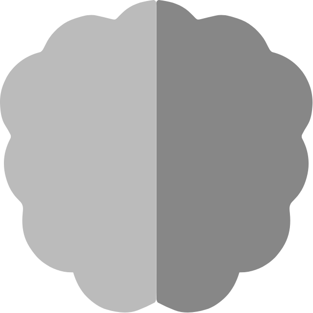

<nav>
    <div class="navbar">
    <!-- home icon -->
    <div>
    <a href="">
        <div class="active-icon nav-icon">
            <svg xmlns="http://www.w3.org/2000/svg" xmlns:xlink="http://www.w3.org/1999/xlink" width="100%" height="" viewBox="0 0 73.95 62.858">
                <defs>
                  <linearGradient id="linear-gradient" x1="0.379" y1="0.285" x2="0.899" y2="1.173" gradientUnits="objectBoundingBox">
                    <stop offset="0" stop-color="#bbb"/>
            
                  </linearGradient>
                </defs>
                <path id="Icon_material-home" data-name="Icon material-home" d="M32.58,67.358V45.173H47.37V67.358H65.858V37.778H76.95L39.975,4.5,3,37.778H14.093v29.58Z" transform="translate(-3 -4.5)" fill="url(#linear-gradient)"/>
              </svg>
        </div>
    </a>
    <!-- community icon -->
    <a href="https://github.com/AnujanR" target="_blank">
        <div class=" nav-icon ">
          <i class="fa-brands fa-github"></i>
              
        </div>
    </a>
    <a href="https://openweathermap.org/api/" target="_blank">
      <div class=" nav-icon">
          
      </div>
  </a>
    <a href="https://newsdata.io" target="_blank">
        <div class=" nav-icon">
            
        </div>
    </a>
    <a href="https://www.mapbox.com" target="_blank">
      <div class=" nav-icon">
          
      </div>
  </a>
    </div>

    <div class="search" >
          <!--search icon -->
    <a href="javascript: void(0);" (click)="showSearch()">
      <div class=" nav-icon">
        <svg xmlns="http://www.w3.org/2000/svg" width="100%" height="100%" viewBox="0 0 72.672 72.672">
          <g id="Group_35" data-name="Group 35" transform="translate(4 4)" style="isolation: isolate">
            <g id="Group_30" data-name="Group 30" transform="translate(0 0)">
              <path id="Path_44" data-name="Path 44" d="M60.512,32.506A28.006,28.006,0,1,1,32.506,4.5,28.006,28.006,0,0,1,60.512,32.506Z" transform="translate(-4.5 -4.5)" fill="none" stroke="#b6b6b5" stroke-linecap="round" stroke-linejoin="round" stroke-width="8"/>
              <path id="Path_45" data-name="Path 45" d="M40.2,40.2,24.975,24.975" transform="translate(22.811 22.812)" fill="none" stroke="#b6b6b5" stroke-linecap="round" stroke-linejoin="round" stroke-width="8"/>
            </g>
          </g>
        </svg>
                   
      </div>
  </a>
    </div>
</div>
</nav>